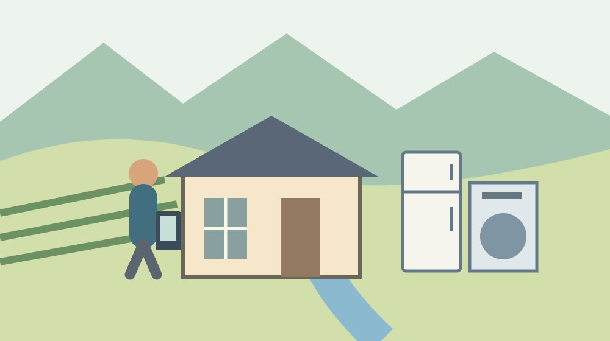

森町の実家の家電処分｜2026年料金で確認

Q. 森町の実家に残った古い家電は、いくらで、どこに頼めば処分できる？
A. 森町では家電リサイクル対象のテレビ、エアコン、冷蔵庫・冷凍庫、洗濯機・衣類乾燥機を町で収集できません。買替店や購入店への相談では、メーカー別のリサイクル料金と運搬料金を分けて確認します。料金は機器によって異なるため、今日の一歩は銘板の写真を撮ることです。
森町の実家を片付けるご家族へ｜運ぶ前に確かめる
森町の実家を片付けるご家族は、家財を分け、帰省日を合わせ、重い物を誰が運ぶかまで考えています。持ち主の方が町内で家を守り、子が町外から通うなら、作業できる日は限られます。家電の処分は、その一日の段取りを崩しやすい仕事です。先に料金と回収先を確かめるための整理を書きます。
私は大石浩之（磐田市／不動産業）です。片付けの費用を考えるとき、処分の料金だけでなく、取り外し、室内からの搬出、車での運搬を分けたいと考えます。機器を玄関へ出せば終わりとは限りません。家族の手間を無償の仕事として隠さず、誰が何を担うかを見積りの前に確かめます。
この記事は、2026年10月6日に確認した森町のごみ案内と、リンナイの2026年3月13日付発表を使います。リンナイの一部製品の料金改定は2026年4月1日からです。すべてのメーカーの家電料金が同じ日に同じ金額へ変わった、という記事ではありません。例に使う製品の範囲を区切ります。
森町での個別の収集運搬料金や回収予約日は未確認です。この記事の金額を見て、家族の片付け予算を確定しないでください。必要なのは、実家の機器を特定して見積りを取ることです。今日の一歩を銘板撮影にするのは、問い合わせを「古い家電がある」という話から具体的な一台へ進めるためです。
事実整理｜町が収集できない家電を分ける
森町の「町では収集できないごみ」は、家電リサイクル対象の製品を町で収集できないと案内しています。テレビ、エアコン、冷蔵庫・冷凍庫、洗濯機・衣類乾燥機などです。買替店または購入店へ、リサイクル料金と運搬料金を払って引取りを依頼する方法が掲載されています。一般のごみへ混ぜないことが出発点です。
森町の同ページの更新日は2024年2月27日です。2026年10月6日に掲載内容を確認しました。更新年月と確認年月は別です。町が収集できないという扱いを確認できても、店がいつ来るか、家の中から運び出せるか、いくらで引き取るかは、その家と依頼先について別途聞く必要があります。
家電という大きなくくりだけでは、処分の方法を決められません。私は、対象品目かどうかを最初に確認することを勧めます。冷蔵庫と小さな家電を同じ欄で数えると、店へ伝える内容が曖昧になります。機器の名前、メーカー、型式を記録し、公式案内と依頼先にその機器の扱いを尋ねます。
購入した店が分からない場合や、遠くの店で買った場合の個別の引取り先は、この記事では確定していません。私は、分からない店名を推測で埋めるより、森町の案内を示して相談する方法を提案します。機器の情報と家の所在地を手元に置き、相談で案内された相手と連絡方法を記録してください。
2026年の料金例｜リンナイの二品目に限って読む
リンナイの2026年3月13日付発表は、同社製の家庭用ルームエアコンと家庭用衣類乾燥機の再商品化等料金を改定しています。税込の新料金は、ルームエアコンが1台1,034円、衣類乾燥機が1台2,574円です。2026年4月1日からの改定として公表されています。他社製品へそのまま当てはめる根拠はありません。
リンナイが記す旧料金は、ルームエアコンが990円、衣類乾燥機が2,530円です。各品目で新旧の差は44円です。同社は、料金が1台当たりで全国同一であることと、別途収集運搬料金が必要なことを説明しています。全国同一なのは示されたリサイクル料金であり、依頼先ごとの総額が同じという意味ではありません。
リンナイの発表には、引取日と指定引取場所への引渡日に関する適用条件、2026年4月の経過措置も記載されています。2026年10月に新しく引取りを頼むための記事では、新料金を確認の入口に使います。ただし、券や過去の手配が関係する案件は、原文と依頼先に照らして個別に確認します。
仮に同社の対象エアコンと対象乾燥機を各1台処分するなら、新料金の合計は3,608円です。旧料金の合計3,520円との差は88円です。この計算は製品2台のリサイクル料金だけです。私は、この数字を家族の負担へ戻すとき、別に必要な運搬などの見積りがない状態では、処分全体を安いと判断しません。
森町での段取り｜銘板と搬出経路を同時に撮る
実家の家電を処分する準備では、銘板の写真と、搬出経路の状況をそろえると相談しやすくなります。銘板にはメーカーや型式などの確認に使う情報があります。無理に機器を動かして撮る必要はありません。見える範囲で記録し、読めない項目は未確認として、依頼先へどう確認すればよいかを尋ねます。
私は、機器全体の写真も一枚残すことを勧めます。銘板だけでは設置場所が伝わりません。階段、廊下、玄関、駐車できる場所は、作業を相談する材料です。寸法を測る場合は安全に測れる範囲で行い、搬出可能と家族だけで断定しません。写真に住所や私物が写る場合は、相談に必要な範囲を選びます。
エアコンの取り外しと家電の引取りは、同じ依頼に含まれるとは限りません。私は、室内機と室外機の場所を伝え、どこからどこまで作業してもらえるかを聞く案を出します。取り外し済みと誤って伝えると、当日の作業が合わなくなります。家族が配管や電気設備を無理に扱わず、依頼先に必要な作業を確認します。
冷蔵庫や洗濯機の搬出では、家族が車を用意できるかだけで予定を決めないほうがよいと考えます。重さ、設置状態、通路、積込みなどの仕事があります。私の提案は、依頼先へ現状を伝え、搬出を含む見積りと条件を取ってから、家族の帰省日を確定することです。人手の数も、安全にできる範囲を前提にします。
良い点｜料金の内訳が分かれば見積りを比べられる
森町の案内は、引取りの相談先と、リサイクル料金・運搬料金が必要なことを示しています。リンナイの発表は、対象製品と単価を公表しています。私は、公式の単価を起点に残る作業の費用を尋ねられる点を評価します。店の見積りを受ける際、どの金額が製品の処理にかかり、どの金額が移動と作業なのかを分けられます。
リサイクル料金の新旧差を知ると、値上げの話を家計の単位に戻せます。対象2台で88円の差という今回の計算例だけを見て、運搬の負担を軽く扱う必要はありません。私は、変わった料金と未確認の料金を分けて話せることに利点を感じます。家族の予算には、決まった欄と見積り待ちの欄を作れます。
銘板を先に撮れば、同じ問い合わせをやり直す回数を減らす準備になります。私は、町外に暮らす子と、実家へ行ける家族が仕事を分けられる点にも意味を感じます。撮影担当が画像を用意し、問い合わせ担当が料金と条件を聞く。全員が同じ日に実家へ集まらなくても進められる作業を先に出せます。
依頼先の作業範囲が分かれば、家族の無理な搬出を減らす判断もできます。私は、料金を払うことを失敗とは考えません。休みを取り、車を手配し、重い物を運ぶ負担も家族の資源だからです。代行してもらう仕事が明らかなら、その金額を何に払うかが見えます。費用の比較は、安全と時間の条件もそろえて行います。
注文したい点｜安い単価で総額を見誤らない
家電処分の費用には、製品のリサイクル料金以外の確認が残ります。リンナイの発表も、別途収集運搬料金が必要としています。森町の個別の運搬料金はこの記事で未確認です。1,034円や2,574円という単価を、実家からの搬出まで含む総額として掲げることはできません。料金と仕事の範囲を一緒に聞いてください。
私は、見積りの説明に、室内からの搬出、取り外し、運搬、機器の処理を別々に書いてほしいと考えます。全作業が一式に含まれる見積りなら、その範囲を文章で確かめます。今日できる一歩は、電話の前に「玄関まで家族が出す必要があるか」を質問欄に足すことです。安さだけで家族の仕事を増やさないための確認です。
森町の空き家等利活用推進支援費用補助金の公式ページは、残置物処分の対象経費に家電製品の処分費用などを挙げています。ただし、単に家電を捨てる全家庭に支給する説明ではありません。売買や賃貸等による利活用を目的とする空き家など、対象の条件があります。自分の物件の適用は別に確認してください。
私は、補助が使えると分かる前に処分を進めてよいか、この記事だけでは判断できません。申請の時期、契約や支払いの扱い、受付状況を町へ確認する必要があるためです。補助を検討するご家族は、先に公式案内を読んで相談します。未確認の見込み額を家計の収入欄へ入れず、確認が済んだ条件だけを記録します。
対案・結論｜今日の一歩は銘板の写真一枚
森町の実家に家電が残った場合、今日の一歩は機器の銘板の写真を安全に撮ることです。家族がその日に訪問できなければ、既存の写真や購入資料があるかを探します。品目、メーカー、型式、設置場所を一台ずつ記録してから依頼先に相談します。読めないものは読めないと伝え、動かす前に確認します。
家の片付け全体の順番は、実家を片付ける前の整理も使えます。私は、家電を運ぶ日に大事な書類を探す作業まで重ねない案を出します。処分する物、残す物、判断待ちの物を分け、家族が機器を使う予定も確かめます。銘板を撮ったことは、処分に同意したこととは別です。
残置物処分の補助を検討する場合は、空き家の残置物処分補助を扱った記事を入口にしてください。現行の町の公式ページと合わせて、対象と申請の段取りを確認します。見積書、写真、領収書など、何をどの段階で残すかも町へ問い合わせ、家族の保管担当を決めます。
処分後に家を貸す可能性があるご家族は、空き家バンクの所有者向け記事も参照できます。私は、家の使い方が決まっていない段階で、全部の家電を一律に処分する案は出しません。残す場合も状態の確認が要ります。家電の処分と家の募集は、目的と担当を分けて計画します。
家族に残す記録｜一台ごとの見積りと回収条件
家電処分の記録は、一台ごとの表にすると情報が混ざりにくくなります。品目、メーカー、型式、銘板写真、設置場所、リサイクル料金、その他の費用、見積り日を記すのが私の案です。対象品目か未確認なら、その欄を空欄のままにせず未確認と書きます。別メーカーの料金を仮置きして合計を確定しないようにします。
回収を予約した後は、日付だけでなく、家を開ける人、依頼先、連絡先、当日の作業範囲を残します。私は、回収する機器の台数を見積りと同じにして確認することを勧めます。追加の一台を当日見つけた場合、その場で同じ条件になると決めつけません。変更の扱いは予約先に確認し、家族の連絡担当へ伝えます。
見積りの金額は、税込か、何を含むかを記録します。支払いの方法や、受領する書類も依頼先へ確認してください。私は、製品を処分した後も、家の整理に必要な記録が散らばらないよう一か所に保管する案を出します。家族の共有メモには、全部の画像を貼るより、原本の保管場所と担当を示すほうが扱いやすい場合もあります。
回収前の通路を整えるなら、無理に機器を移動させず、片付けられる小物から分けます。私は、通路の安全確認も一つの作業として数えます。玄関が開くか、依頼先が停車できる場所はどこか、家族が立ち会えるか。料金表に載らない現場の条件をそろえることが、限られた帰省日を作業に使う準備になります。
大石の視点｜料金より先に、家族が背負う作業を見る
森町の実家の家電処分を考える私は、料金と家族の仕事を一緒に見たいと考えます。1台の単価が分かると安心できますが、重い物をどこから誰が運ぶかは別の話です。家の維持を続ける方と、休みを使って通う子の負担を、処分費の陰に隠したくありません。見積りの確認は、家族の仕事を見える形にするために行います。
私はこう考えます。実家へ行く日を一日だけ使うなら、機器を運ぶ前にスマートフォンで銘板を撮ります。家族のメモには、機器の情報と、玄関まで誰が運ぶのかという質問を並べます。料金を聞いてから急に人手を集めるより、作業の範囲を先に尋ねたい。これは私が提案する準備の場面であり、体験した出来事を再現したものではありません。
私は、44円の値上げを軽い話として片付けたくありません。同時に、その差だけで処分の難しさを語るのも違うと考えます。対象2台の新旧差は88円という計算ですが、現場の運搬費は未確認です。家計に翻訳するなら、分かった単価と分かっていない作業費を分けます。数字を増やすより、空いている欄を具体的な質問に変えます。
家電を処分したら実家の問題が全部解決するわけではありません。維持費、名義、残す家財、家の使い方はその先にも残ります。それでも一台の情報をそろえれば、回収の相談を前へ進められます。この記事の結論は、料金だけを見て運び始める前に、銘板と搬出条件を確認することです。家族に無理をさせず、次の判断材料を増やします。
よくある質問
町の通常のごみ収集へ家電を出せますか？
森町は、家電リサイクル対象のテレビ、エアコン、冷蔵庫・冷凍庫、洗濯機・衣類乾燥機を町で収集できないと案内しています。買替店または購入店への引取り相談では、リサイクル料金と運搬料金が必要です。機器を一般のごみへ混ぜず、品目、メーカー、型式を確認してください。その他の家電の扱いも、機器ごとに確認します。
リンナイの1,034円でエアコン処分は全部済みますか？
1,034円はリンナイが公表する同社製の対象ルームエアコン1台の税込リサイクル料金です。別途収集運搬料金が必要とされています。取り外しや室内からの搬出を含むかは依頼先へ確認してください。他社製の料金として使うこともできません。銘板の情報と設置状態を伝え、仕事の範囲をそろえて見積りを取ります。
実家の家電処分に補助金を使えますか？
森町の空き家等利活用推進支援費用補助金には、残置物処分の対象経費として家電製品の処分費用などの記載があります。ただし、すべての家庭の処分が対象ではありません。物件の条件、申請の時期、受付状況、処分を先にしてよいかは町へ確認してください。この記事では個別適用や支給額を確定していません。
参考にした公式情報
- リンナイ株式会社：再商品化等料金改定（2026年3月13日）（2026年10月確認／確認日：2026年10月6日）
- 森町：町では収集できないごみ（2026年10月確認／確認日：2026年10月6日）
- 森町：空き家等利活用推進支援費用補助金（2026年10月確認／確認日：2026年10月6日）
最終確認日：2026-10-06。制度・数値・料金は変わる場合があります。税務・登記・契約・裁判手続の個別判断は、管轄窓口、司法書士、税理士、弁護士等へ確認してください。この記事は公表情報と大石の意見を段落単位で分けています。